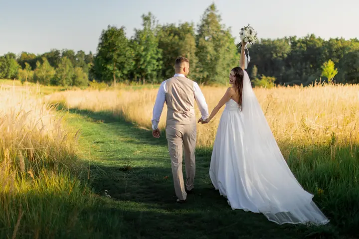
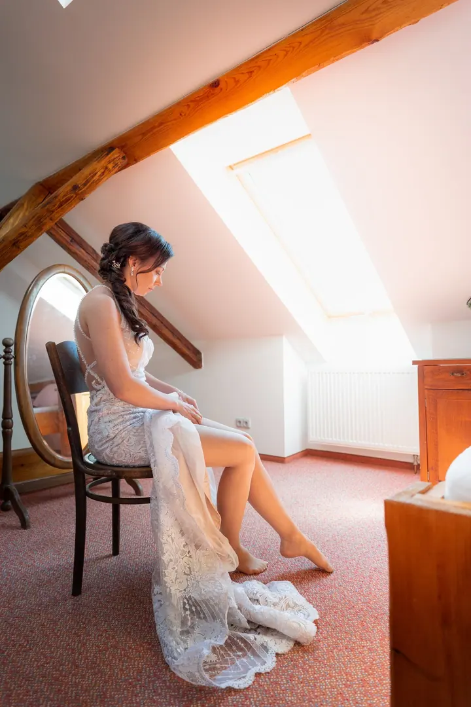

jedna
Svatební focení na celý den
Jsem s vámi od ranních příprav až do večerní party, 12 až 14 hodin. Fotím za jednu sazbu po celý den, bez časových omezení a bez balíčků.


Jmenuji se Jan Hrinda a fotím svatby z Olomouce. Jsem s vámi od ranních příprav přes obřad a společné focení až po večerní party s prskavkami. Ke každé svatbě navíc točím video zdarma.
Více o mně
Co dělám
jedna
Jsem s vámi od ranních příprav až do večerní party, 12 až 14 hodin. Fotím za jednu sazbu po celý den, bez časových omezení a bez balíčků.
dvě
Ke každé svatbě dostanete krátký klip s průřezem celého dne, od rána až do prskavek. Písničku si vybíráte sami a video vám pošlu nejpozději do 48 hodin.
Foťáku neuniknete za jakéhokoliv počasí

Za objektivem
Chci, aby pro vás výběr fotografa nebyl stres. Proto nemám žádné balíčky ani časové limity. Fotím za jednu sazbu po celý den a na svatbě s vámi budu 12 až 14 hodin, od budíčku až do večera.
Celý den vyprávím jako příběh: přípravy, obřad, oběd, společné focení i odpolední party. Už během příprav si na můj foťák zvyknete, takže u obřadu budete uvolnění. U oběda nafotím zvyky a přípitek a pak si na chvíli sednu taky, fotit svatebčany u svíčkové mi nepřijde slušné.
Počasí se nebojím. Už mnohokrát jsem fotil v dešti, i v lijáku během obřadu, a oba foťáky mám utěsněné proti vodě. Zkrátka, foťáku neuniknete za jakéhokoliv počasí.
Jan
Většinou začínám kolem osmé ráno. Fotím účes, líčení a oblékání nevěsty, a pokud se ženich chystá kousek od vás, zaběhnu i za ním. Zároveň už točím video.
Od příchodu přes sliby, prstýnky a podpisy až po první polibek. Hned po obřadu, dokud jsou všichni pohromadě, uděláme společnou fotku a skupinky.
U oběda zachytím zvyky a přípitek. Společné focení doporučuji plánovat spíš k večeru, kdy je mnohem hezčí světlo, případně si na pár minut odskočíme při západu slunce.
Zůstávám až do večerní zábavy a prskavek. Video z celého dne vám pošlu nejpozději do 48 hodin, fotky určitě dřív, než si stihnete změnit jména na občankách.
Portfolio
Fotografie jsou ilustrační
Otázky
Pokud se domluvíme, že to má smysl, nevidím v tom problém. Na svatbě s vámi budu 12 až 14 hodin.
Pokud se chystá na stejném místě nebo pár minut cesty autem, tak ano. Ženich potřebuje na oblečení něco mezi 12 sekundami a 2 minutami, takže to určitě zvládneme.
Déšť není žádný problém. Oba foťáky i objektivy jsou utěsněné proti dešti a špatné počasí nahrává kreativnímu pojetí fotek.
Krátký klip s průřezem celého dne, od rána až do prskavek. Písničku si volíte sami a video vám pošlu hned druhý den, nejpozději do 48 hodin.

Napište pár vět o tom, co si představujete. · +420 724 883 021